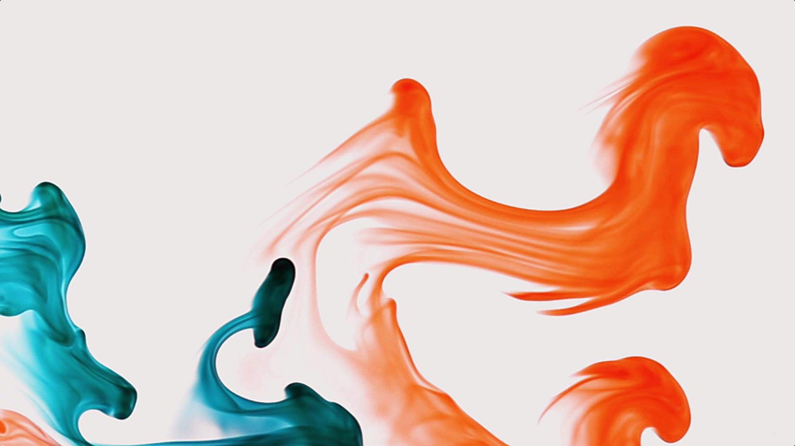
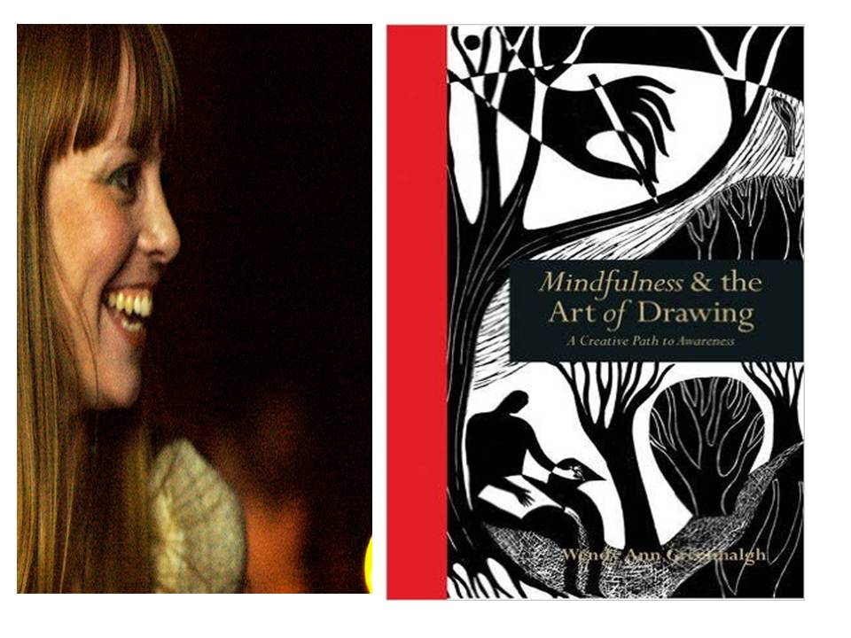
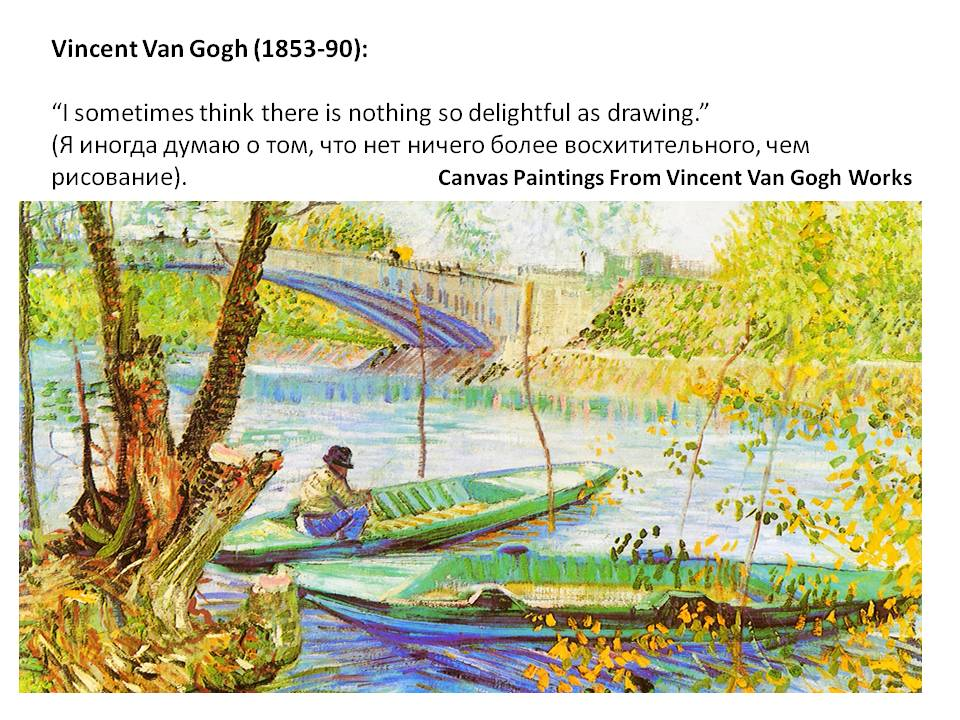

Подготовьте удобное место
Выберите место, где можно ненадолго устроиться удобно. Не нужно добиваться особенного состояния или выполнять упражнение идеально. Можно оставить глаза открытыми. Если дискомфорт усиливается, остановитесь и вернитесь к обычным занятиям.
Мягкое дыхание
Дышите спокойно, в удобном ритме, без усилия и задержек. Не старайтесь делать максимально глубокий вдох. Заметьте, как воздух входит и выходит; при желании можно мягко считать. Если появляется головокружение или неприятное ощущение, прекратите упражнение и дышите как обычно.
Образ комфортного места
Если работа с образами вам приятна, можно представить реальное или воображаемое место, связанное со спокойствием. Заметьте цвета, звуки и ощущение пространства. Вы сами выбираете детали и длительность. Если образ становится неприятным, откройте глаза и обратите внимание на комнату вокруг.
Подбирать то, что подходит вам
Одному человеку помогает тишина, другому — прогулка или разговор. Практики расслабления не обязаны подходить всем одинаково и не заменяют индивидуальную помощь. На консультации можно обсудить свой опыт и подобрать более удобный способ.
Иллюстрации и материалы
Нажмите на изображение, чтобы рассмотреть его целиком. Текстовые материалы представлены на русском языке.
{kind=link}

{kind=link}

Хотите обсудить свою ситуацию?
Напишите Виктории, чтобы задать вопрос или согласовать первую встречу.
Связаться с Викторией →